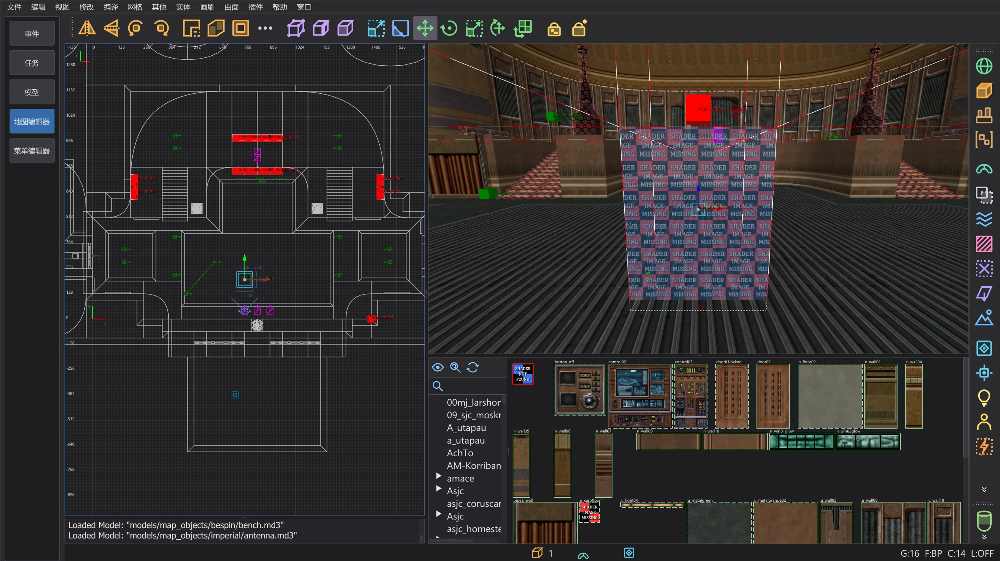
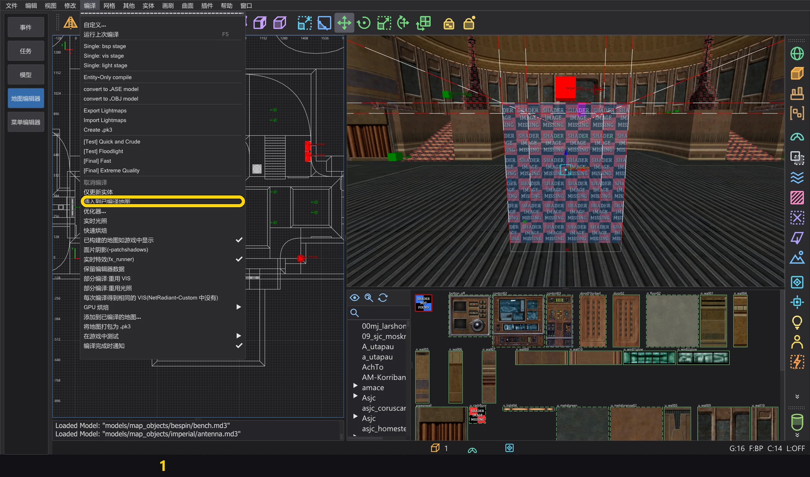
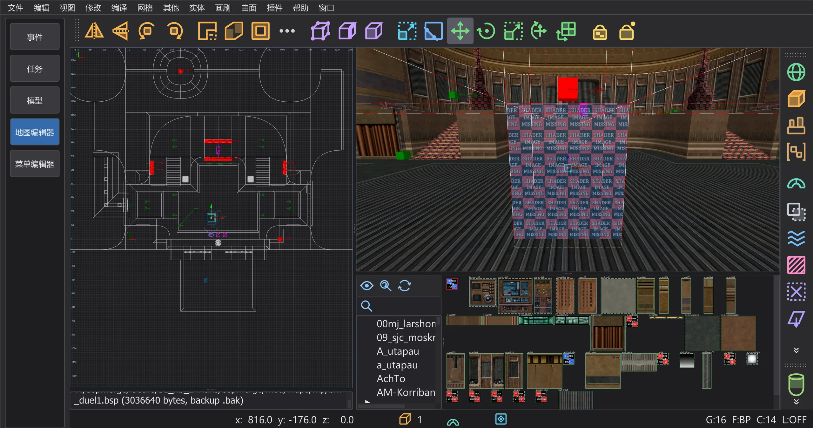
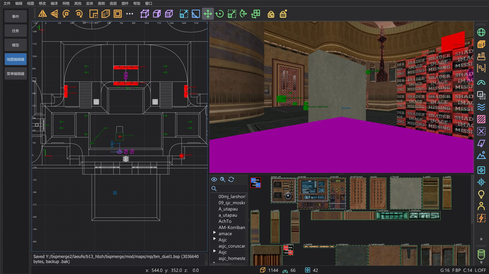
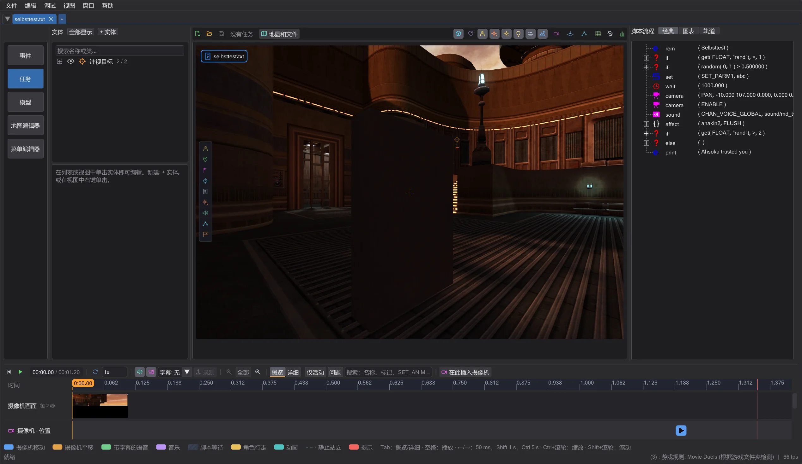

地图编辑器:向已编译地图插入画刷实体
向没有源文件的已编译地图添加触发器、func_usable、裁剪画刷以及 func_door 等可见移动体:编译 > 插入到已编译地图 只编译新内容并追加到 .bsp——实体作为新模型 *N,可见实体带有与地图相符的光照贴图,裁剪画刷进入世界。世界的 BSP 树、VIS 和光照贴图逐字节保持不变。
使用方法#
- 1
用 文件 > 打开 .bsp 打开已编译的地图(参见 地图编辑器:打开并修改已完成的地图)。
- 2
像平常一样建立新的画刷实体:用
textures/system/trigger的画刷作为trigger_multiple或trigger_once,用nodraw画刷组成func_usable,带origin画刷的画刷实体。新的点实体(例如新触发器指向的target_print或target_relay)会一起插入。
mp/duel1 的一个玩家出生点前方新建的 trigger_multiple及其target_print。 - 3
编译 > 插入到已编译地图:只有新实体被放入一张空地图(没有画刷的 worldspawn,工作文件夹中的
<名称>_teil.map),由 q3map2-bsp编译。泄漏无关紧要,也不需要光照:q3map2 编译实体模型时不做填充。
编译 菜单及其中的条目 (1)。 - 4
它们的模型作为新的
*N追加到 .bsp:模型、画刷、画刷面、平面和着色器(已有的相同标志的着色器会被重用),并像 q3map2 那样为每个模型建立一个独立的叶。实体在实体数据块中获得"model" "*N"。世界的 BSP 树、VIS、光照贴图、表面和光照网格逐字节保持不变;其他数据块只在末尾增长。 - 5
保存方式与 着色器和表面 窗口相同:松散的 .bsp 先备份为
.bak再写入,来自 .pk3 时可选择方式。之后新实体就属于这张地图;再次插入只会处理此后新增的内容。
插入之后:控制台报告已保存的 .bsp 及其备份 .bak。


检查#
- 不会插入:不是裁剪画刷的新世界画刷(实心、水、雾或可见的画刷会改变 BSP 树和 VIS)、修改或删除的世界画刷以及已有画刷实体(它们需要完整编译)、不同的 BSP 格式、使用外部光照贴图(
lm_####.tga)的已编译地图。 - 渲染器的限制:最多 256 页光照贴图(
MAX_LIGHTMAPS),以及qfiles.h中表面、顶点和索引的限制;超出时命令会拒绝并报告数字。 - 模型数量按游戏加载的方式计算:单人模式最多 511 个(下一个编号是游戏自己的盒子模型
BOX_MODEL_HANDLE),多人模式 510 个(CAPSULE_MODEL_HANDLE);从 513 个起游戏会拒绝加载地图(MAX_SUBMODELS)。 - 警告:与实心世界画刷重叠的实心新画刷、在地图中找不到对应
targetname的target、qfiles.h中的格式限制。 - 修改过的已有点实体保持已编译地图中的样子;请用 编译 > 仅更新实体 写入它们。
- 着色器和表面 窗口中未保存的更改会先询问:保存 保存它们,实体插入到保存后的地图中;放弃 丢弃它们;取消 不插入任何内容。打开另一张地图之前也会出现同样的询问。
- 如果保存失败(例如游戏正打开该文件)或你取消了保存方式的选择,则什么都不会改变:文件、工作副本和新实体保持原样,你可以再次插入。
裁剪画刷和可见移动体#
- 1
裁剪画刷:worldspawn 中使用
textures/system/clip(或其他带playerclip、monsterclip、botclip、shotclip的着色器)的新画刷会进入世界。它会像 q3map2 完整编译时那样,被登记到它伸入的每一个 BSP 树叶节点中——游戏正是这样找到世界画刷的。只有叶节点的画刷列表和画刷增加;BSP 树、VIS、表面、光照贴图和光照网格逐字节保持不变。
mp/duel1 玩家出生点前:触发器后方的裁剪画刷和新的 func_door。 - 2
可见移动体(带可见画刷的
func_door、func_train、func_rotating、func_static、func_plat)需要光照。第一次编译之后,命令会再编译一次该部分,这次以转换回来的世界作为投影体,加上它烘焙的模型和地图的灯光(<名称>_teillicht.map),并进行光照:q3map2-bsp和-light使用地图中保存的开关(_q3map2_cmdline),没有时使用 q3map2 的默认值。 - 3
只接管新模型:它们的表面、顶点、索引和着色器,以及它们使用的光照贴图页,追加在地图光照贴图之后。画刷面指向它们的新表面,雾与地图中的雾对应。世界的光照贴图逐字节保持不变。

任务选项卡预览中的已保存地图:从出生点玩家视角看到的带光照贴图的新门。